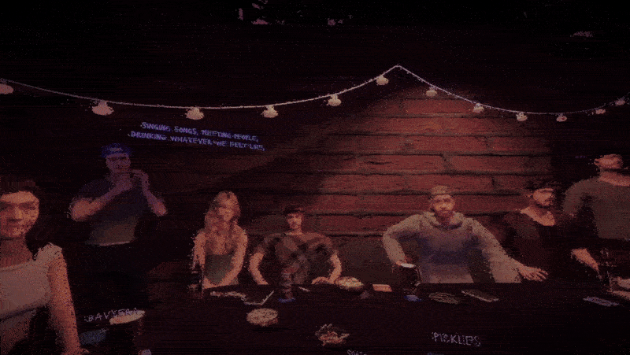
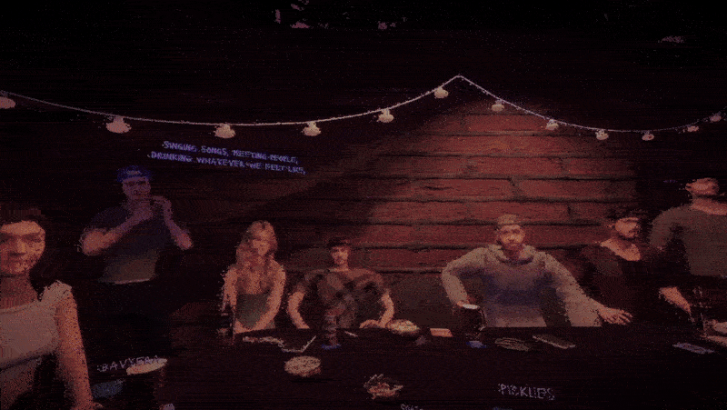
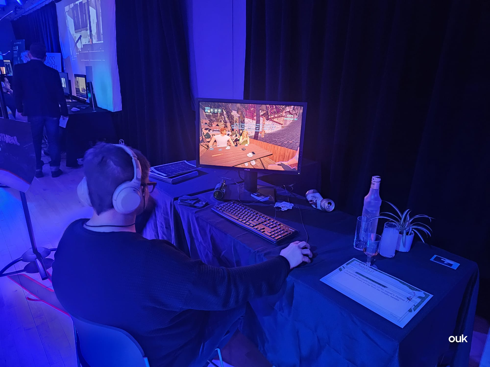
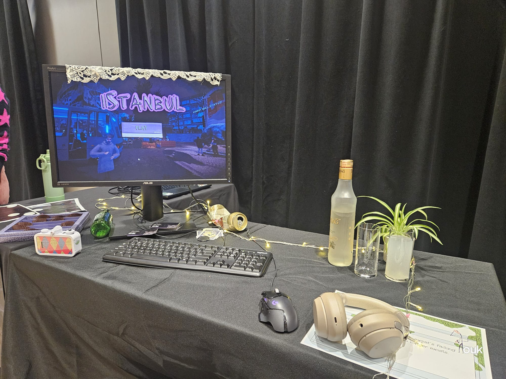
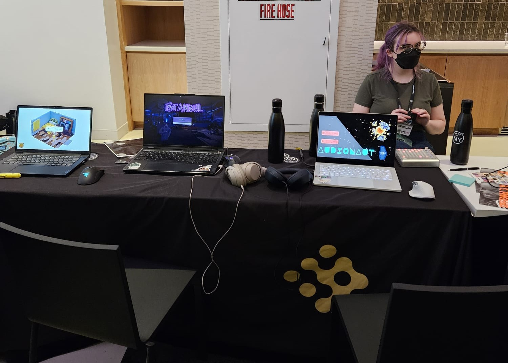
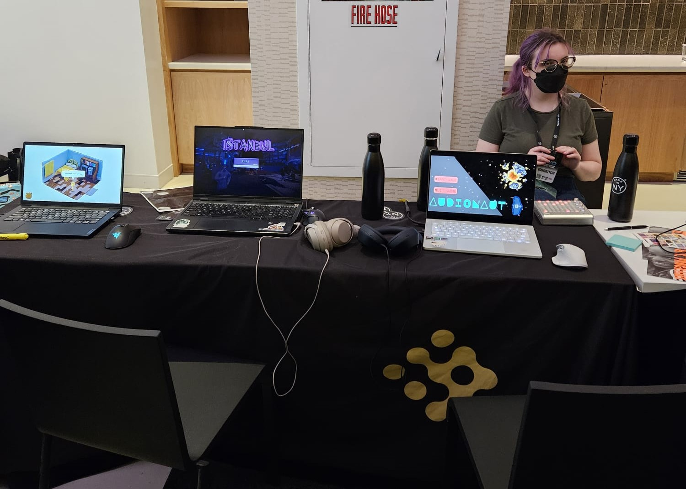
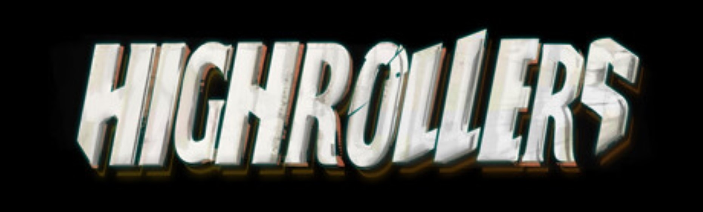
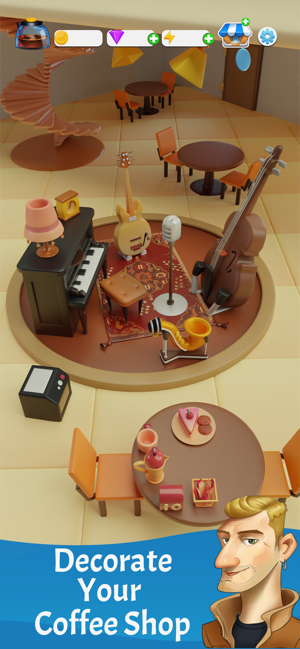
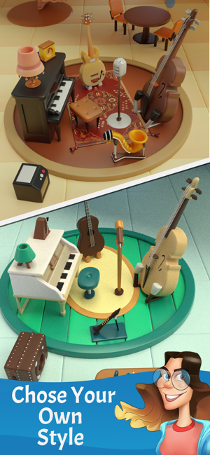
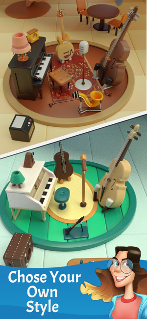

-

Istanbul is a 3D first person, narrative-driven exploration game that takes place in a haunting reconstruction of Istanbul. The game reflects on migration, longing, and urban transformation through atmospheric storytelling and interactive systems.
 

Role: Solo Developer, Gameplay Programmer (Unity), Technical Artist (HLSL/Shader Graph), 3D Artist(Blender), Narrative Designer (CDs)
- Node Based Dialogue Editor : OOP oriented custom node-based dialogue editorh with runtime JSON parsing, and scalable logic architecture. View it on GitHub
- Shader Work : Custom HLSL/Shader Graph effects for outlines, distortion, parallax fog, glitch feedback
- 3D Art: Modeled assets in Blender, optimized for low-poly visuals and high performance
- C# Systems : OOP oriented game systems, custom game event management, and 3d physics
- Performance : Async loading, GPU-conscious design, low-overhead FX and visuals
Presented at: NYU Game Center Spring Showcase 2025, NYC Games Festival 2025, GDC 2025
  

-

High Rollers* is a 3D action boss-battler blending rogue-lite powerups, punchy combat, and handcrafted enemy encounters. wishlist High Rollers on Steam*
Role: Lead Gameplay Programmer (Unity), Technical Artis (HLSL / Shader Graph), Project Manager
- Gameplay Systems : Designed and implemented combat systems, AI NPC behavior and player progression
- Visual Effects : Special effects with Unity’s VFX Graph and HLSL; integrated 3D assets
- Tooling Design : Developed custom editor tools to streamline design iteration and gameplay tuning
- Optimization : Conducted GPU/CPU profiling; improved performance via batching, load balancing, and Addressables
Achievements:
Watch the trailer here:
-
Merge Barista*
A mobile puzzle/merge game developed and launched with Zerosum and published by Zynga. The game features merge gameplay, live content updated, and a coffee shop meta.
 

Role: C# Programmer
- LiveOps Programming : Addressables, user profiles, ads and monetization
- System Design : OOP oriented system design, meta implementation, user progression tracking
- Collaboration : Worked as a programmer with team of 11 , directly with level designers and UI artists, shipped monthly updates
Play Merge Barista on the App Store
Check out this gameplay video of Merge Barista on youtube, shared by a player!
-

Belgrad Park* a short-form 3D horror experience about urban legends and true crime storytelling. Built in Unity with a team of 3 and showcased at NYU Game Center’s Spring 2024 showcase

Role: C# Programmer, Game Designer, Technical Artist (Shader Graph / HLSL)
- Design: level and environment design, 3d modeling with blender
- Programming: 3d gameplay implementation, custom 3d physics based interaction system
check out this gameplay video of Belgrad Park on youtube, shared by a player!
-
Itch.io Projects
Find more experimental, weird, and playful works on my Itch.io page* — including tools, screensavers, and game jams.
-
Cultural Games Talk
My talk at NYU Game Center on cultural authenticity, memory, and resistance in game design.
github @oykuyamakov
itch.io @yuko
instagram: @madayten